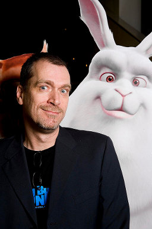
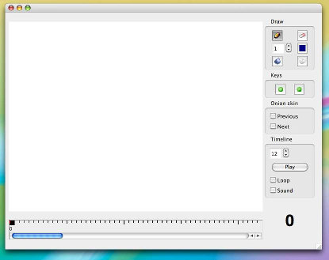
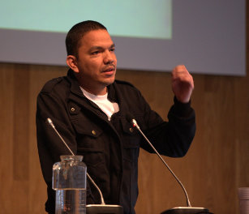

Ton Roosendaal, presidente da Blender Foundation.
Fotografia de William Maanders.
De acordo com a versão relatada na página oficial da aplicação 1 , a origem do Blender remonta a 1988, quando Ton Roosendaal, figura liderante nesta narrativa, co-fundou a “NeoGeo”, um estúdio de animação que rapidamente se tornou numa das principais empresas holandesas na área da animação 3D. Em 1995, em vez da atualização do conjunto de ferramenta próprias até aí utilizado, a empresa opta pela reescrita do código-fonte criando uma nova ferramenta de modelação e animação 3D, foi iniciado o processo de conceção do Blender.
Em Junho de 1998, Ton Roosendaal funda a empresa “Not a Number” (NaN), spin-off da “NeoGeo”, com o objetivo de aprofundar o desenvolvimento e publicitar a aplicação criada. O modelo comercial da empresa envolvia a distribuição gratuita da ferramenta de modelação e animação 3D, permitindo alcançar um público mais abrangente, e a comercialização de serviços e outros produtos desenvolvidos em torno do funcionamento da aplicação.
Nos dois anos anos seguintes, a empresa e a ferramenta alcançaram uma enorme visibilidade e um sucesso surpreendente. No final de 2000, o Blender já tinha sido distribuído na sua versão 2.0, existiam 250.000 utilizadores registados e empresa integrava funcionários na Holanda, Estados Unidos e Japão.
No ano seguinte, não obstante o sucesso inicial, a leis do mercado forçam a empresa a um redimensionamento. Ainda em 2001, a empresa edita a sua primeira aplicação destinada ao mercado comercial mas os números das vendas revelam-se bastante abaixo das expetativas. Consequentemente, os investidores decidem encerrar todas as atividades da empresa, incluindo o desenvolvimento do Blender.
Em Março de 2002, Ton Roosendaal funda a Blender Foundation com o intuito de continuar a promover o desenvolvimento e a promoção do Blender numa lógica de projeto com código aberto e sustentado pela comunidade dos seus utilizadores. Poucos meses depois, em Julho, Roosendaal consegue firmar um acordo entre a Blender Foundation e os investidores da NaN Holding BV que estabelece a venda dos direitos sobre a propriedade intelectual e código-fonte do Blender a troco de um pagamento único de 100.00 € e da manutenção do código-fonte da aplicação, e subsequentes desenvolvimentos, em regime de Software Livre ou Código Aberto.
Em apenas sete semanas, com o auxílio de voluntários, através da campanha Free Blender para angariação de donativos, a Fundação reuniu o montante necessário para cumprir com o acordo. Em Outubro de 2002, durante a 1a Conferência Blender, em Amesterdão, o código-fonte é oficialmente disponibilizado na Internet sob uma licença GNU General Public License.
Para saber mais...

Screenshot da versão v0.2 do Pencil Planner.
Imagem publicada em
The vision for Pencil.
No final de 2005, Patrick Corrieri criou uma aplicação simples para pencil tests (line tests) chamada "Pencil Planner". A aplicação era muito simples mas já apresentava uma área de desenho, uma timeline simples onde podiam ser inseridas keyframes e onion skin com as frames anterior e seguinte. Pascal Naidon, entusiasmado com o potencial da ferramenta, juntou-se ao projeto e, em outubro de 2006, é lançada a versão 0.3, a primeira que contou com o trabalho voluntário dos dois programadores.
O trabalho de desenvolvimento dos dois programadores prosseguiu nos anos seguintes com contributos ocasionais de terceiros. No entanto, Pascal Naidon foi assumindo maior protagonismo à medida que a disponibilidade de Patrick Corrieri diminuiu. No inícios de 2008, foi lançada a versão 0.4.4 já com Pascal Naidon a assumir praticamente o papel de único programador, apesas de alguns contributos ocasionais de terceiros. Com o fim da disponibilidade de Pascal Naidon para continuar a trabalhar nos seus tempos livres, a ferramenta chegava à sua última versão.
Em maio de 2013, o projeto renasce através de uma fork: Pencil2D. Baseado no código original, disponível porque o Pencil era Sofware Livre, o novo projeto nasce pela mão de Matt Chang, atual programador principal. O código do Pencil2D está disponível no GitHub e conta já com contributos de 10 programadores.
Para saber mais...
- História e visão do Pencil >>

À esquerda: Konstantin Dmitriev e Carlos Lopez Gonzalez no Libre Graphics Meeting 2013.
Fotografia de Carlos Lopez .
O Synfig Studio (também conhecido por Synfig) nasceu em 2002 pela mão de Robert Quattlebaum e com contributos de Adrian Bentley. Originalmente, a aplicação chamava-se SINFG, acrónimo recursivo de "SINFG Is Not A Fractal Generator", referindo-se à capacidade do software para criar imagens fractais para além de animação.
A origem do Synfig está intimamente ligada ao trabalho desenvolvido no estúdio de animação também fundado por Robert Quattlebaum: o Voria Studios. O Synfig foi criado enquanto ferramenta in-house para produção de animação 2D. Após o encerramento das portas do estúdio, em dezembro de 2004, Quattlebaum continuou o trabalho de desenvolvimento do Synfig praticamente sozinho. Em novembro de 2005, tentando captar colaboradores, Robert Quattlebaum libertou o código-fonte e lançou o Synfig como Software Livre.
Atualmente, Robert Quattlebaum já não faz parte da equipa de programadores do Synfig. O código da aplicação está disponível no GitHub e conta com contributos de 15 programadores liderados por Carlos Lopez Gonzalez, programador principal, e Konstantin Dmitriev.

Gustav González no Libre Graphics Meeting 2013.
Fotografia de Nate Willis.
O Tupi nasceu em 2010 de um fork da aplicação KTooN feito por Gustav González, atual principal programador do Tupi e um dos programadores do KTooN. O KToon nasceu em 2002 e resultou da colaboração entre Gustav González, programador, e Monica Ortiz, proprietária do estúdio de animação Toonka Films. O objetivo inicial era criar um substituto do Macromedia Flash para utilizar no estúdio e criar uma ferramenta Free/Open para pequenos estúdios de animação 2D.
A equipa atual do Tupi inclui dois elementos principais: Cody Clees (gestão e liderança do projeto) e Gustav González (programador e liderança de desenvolvimento). O projeto conta ainda com a colaboração e donativos pontuais de alguns voluntários.